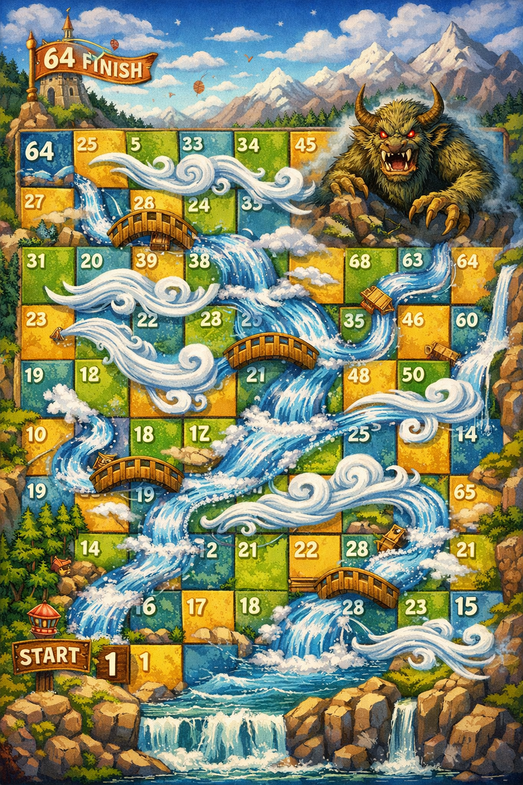

Entre vientos y ríos
Tecnologías y Aplicaciones web
Este es un juego de estrategia, con un tablero 10x10 en el que los jugadores enfrentan casillas sorpresas que les dan cartas, los hacen subir, bajar, retroceder, etc. Así, en este juego de 2-4 personas los jugadores tiran los dados en cada turno, negocian con los demás para obtener alguno de los recursos limitados, y buscan llegar a la casilla final del tablero. Para ganar, deben tener suerte y lograr pasar los distintos obstáculos que hay a lo largo de las casillas para alcanzar la casilla número 100. ¡Buena suerte!
